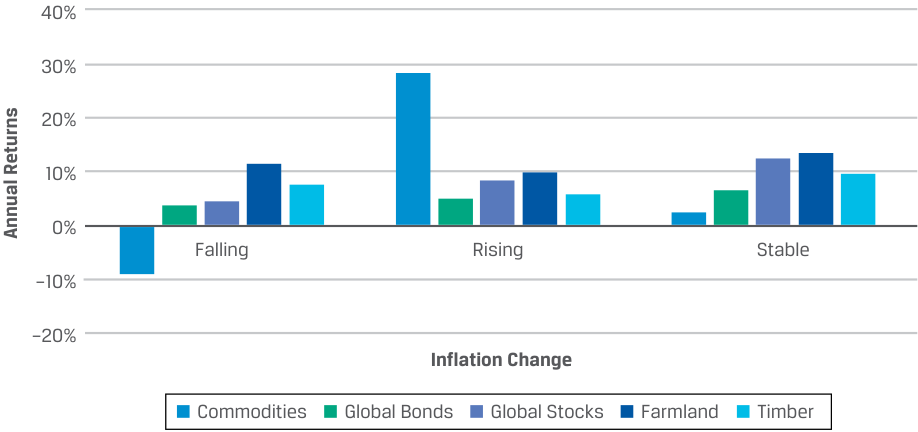

Learning Module 5 Natural Resources - Part 2: Natural Resource Investment Risk, Return, and Diversification
Volume 8: Alternative Investments
Learning Module 5 Natural Resources
Part 2/2: Natural Resource Investment Risk, Return, and Diversification (PDF Pages 143–154)
Tập 8: Đầu tư Thay thế (Alternative Investments)
Học phần 5: Tài nguyên Thiên nhiên (Natural Resources)
Phần 2/2: Rủi ro, Tỷ suất sinh lợi và Đa dạng hóa của Đầu tư Tài nguyên Thiên nhiên (Trang PDF 143–154)
- Which of the following statements is most correct about investors seeking commodity exposure through a commodity trading adviser (CTA)?
-
A. The investor is seeking to make direct investment in commodities.
-
B. The investor is seeking to benefit from an income stream from commodities.
-
C. The investor is seeking to profit from specific directional trends in commodity futures contracts.
-
Solution:
- Phát biểu nào sau đây là đúng nhất về các nhà đầu tư tìm kiếm sự tiếp cận với hàng hóa thông qua một nhà tư vấn giao dịch hàng hóa (CTA)?
-
A. Nhà đầu tư đang tìm cách thực hiện đầu tư trực tiếp vào hàng hóa.
-
B. Nhà đầu tư đang tìm cách hưởng lợi từ một dòng thu nhập từ hàng hóa.
-
C. Nhà đầu tư đang tìm cách kiếm lời từ các xu hướng biến động giá có định hướng cụ thể (specific directional trends) trong các hợp đồng tương lai hàng hóa.
C is correct. Commodity trading advisers devise trading strategies using derivative contracts on commodities that are focused on predicting upcoming bull or bear trends. A is incorrect because CTAs do not advise on physical commodity transactions. B is incorrect for a similar reason, because the income stream from most commodities would require direct or indirect land ownership, which produces commodities.
Lời giải:
- Discuss how the relationship between costs of carry and benefits of owning a commodity outright affect the relationship between the forward price and spot price of the commodity.
C là đáp án đúng. Các nhà tư vấn giao dịch hàng hóa (CTAs) thiết kế các chiến lược giao dịch sử dụng hợp đồng phái sinh trên hàng hóa tập trung vào việc dự đoán các xu hướng thị trường giá lên (bull) hoặc giá xuống (bear) sắp tới. A không đúng vì các CTA không tư vấn về các giao dịch hàng hóa vật chất. B không đúng vì lý do tương tự, bởi dòng thu nhập từ hầu hết các loại hàng hóa sẽ đòi hỏi quyền sở hữu đất trực tiếp hoặc gián tiếp — nơi sản xuất ra hàng hóa đó.
Solution:
- Thảo luận cách thức mối quan hệ giữa chi phí nắm giữ (costs of carry) và lợi ích của việc sở hữu trực tiếp một hàng hóa ảnh hưởng như thế nào đến mối quan hệ giữa giá kỳ hạn (forward price) và giá giao ngay (spot price) của hàng hóa đó.
A simple framework for expressing the relationship between forward price and spot price in terms of costs and benefits of owning the underlying commodity is as follows:
Lời giải:
Forward price = Spot price + Costs of carry – Benefits of ownership.
Một khuôn khổ đơn giản để biểu thị mối quan hệ giữa giá kỳ hạn và giá giao ngay xét theo chi phí và lợi ích của việc sở hữu hàng hóa cơ sở như sau:
Thus, if costs of carry exceed benefits of ownership, then forward price is greater than spot price for the commodity. In contrast, forward price is less than spot price if benefits exceed costs.
Do đó, nếu chi phí nắm giữ vượt quá lợi ích của việc sở hữu, thì giá kỳ hạn sẽ lớn hơn giá giao ngay của hàng hóa đó. Ngược lại, giá kỳ hạn sẽ nhỏ hơn giá giao ngay nếu lợi ích vượt quá chi phí.
- Explain why low inventories of a commodity may result in backwardation for the commodity.
- Giải thích tại sao mức tồn kho thấp của một hàng hóa có thể dẫn đến trạng thái bù hoãn bán (backwardation) đối với hàng hóa đó.
Solution:
Lời giải:
Backwardation reflects a downward-sloping term structure of prices for a commodity. In the near term, backwardation implies forward price below spot price. Low inventories of a commodity cause investors to prefer to hold the physical commodity over derivative contracts (i.e., forwards). This preference will cause price for the physical asset to be bid higher, and if this noncash benefit of owning the physical commodity (also known as convenience yield) exceeds costs of ownership of the commodity (such as interest and storage), then the spot price of the commodity exceeds its forward price.
Trạng thái bù hoãn bán (backwardation) phản ánh một cấu trúc kỳ hạn của giá dốc xuống đối với một hàng hóa. Trong ngắn hạn, backwardation hàm ý giá kỳ hạn thấp hơn giá giao ngay. Mức tồn kho thấp của một hàng hóa khiến các nhà đầu tư thích nắm giữ hàng hóa vật chất hơn là các hợp đồng phái sinh (tức hợp đồng kỳ hạn). Sự ưu tiên này sẽ khiến giá của tài sản vật chất được trả giá cao hơn, và nếu lợi ích phi tiền mặt của việc sở hữu hàng hóa vật chất này (còn được gọi là lợi suất thuận tiện – convenience yield) vượt quá chi phí sở hữu hàng hóa (chẳng hạn như tiền lãi và chi phí lưu kho), thì giá giao ngay của hàng hóa sẽ vượt quá giá kỳ hạn của nó.
NATURAL RESOURCE INVESTMENT RISK, RETURN, AND DIVERSIFICATION
RỦI RO, TỶ SUẤT SINH LỢI VÀ ĐA DẠNG HÓA CỦA ĐẦU TƯ TÀI NGUYÊN THIÊN NHIÊN (NATURAL RESOURCE INVESTMENT RISK, RETURN, AND DIVERSIFICATION)
4
4
analyze sources of risk, return, and diversification among natural resource investments
Mục tiêu học tập: phân tích các nguồn rủi ro, tỷ suất sinh lợi và sự đa dạng hóa giữa các khoản đầu tư tài nguyên thiên nhiên (natural resource investments)
Commodity prices have risk and return drivers that are often related to but do not always directly coincide with the timing of the economic cycle affecting the prices of common equity and debt securities. Commodities, farmland, and timberland have different return drivers and cycles. Commodities are priced on a second-by-second basis on public exchanges, whereas land generally has an infrequent pricing mechanism and may include imprecise estimates, as opposed to actual transactions. Keeping these market structure differences in mind helps investors consider their relative benefits and challenges.
Giá hàng hóa có các động lực rủi ro và tỷ suất sinh lợi thường liên quan đến nhưng không phải lúc nào cũng trùng khớp trực tiếp với thời điểm của chu kỳ kinh tế vốn ảnh hưởng đến giá của cổ phiếu phổ thông và chứng khoán nợ. Hàng hóa, đất nông nghiệp và đất lâm nghiệp có các động lực tạo tỷ suất sinh lợi và chu kỳ khác nhau. Hàng hóa được định giá theo từng giây trên các sở giao dịch đại chúng, trong khi đất đai nhìn chung có cơ chế định giá không thường xuyên và có thể bao gồm những ước tính thiếu chính xác, trái ngược với các giao dịch thực tế. Việc ghi nhớ những khác biệt về cấu trúc thị trường này giúp các nhà đầu tư cân nhắc những lợi ích và thách thức tương đối của chúng.
Commodities
Hàng hóa (Commodities)
Physical commodity supply dynamics are determined by production (in the case of hard commodities), seasonal crop yields (for soft commodities), and inventory levels in the short term, while commodity end user/consumer use of these basic inputs drives ultimate demand. Supplies of physical commodities are determined by production and inventory levels and secondarily by the actions of non-hedging investors. Demand for commodities is determined by the needs of end users and secondarily by the actions of non-hedging investors. Investor actions can both dampen and stimulate commodity price movements, at least in the short term. Gold, a physical commodity and a precious metal, is often a preferred safe haven given its historical use as a store of value among investors and as a non-currency based reserve among central banks.
Động lực cung hàng hóa vật chất được quyết định bởi hoạt động sản xuất (trong trường hợp hàng hóa cứng), năng suất mùa vụ theo mùa (đối với hàng hóa mềm), và mức tồn kho trong ngắn hạn, trong khi việc sử dụng những yếu tố đầu vào cơ bản này của người dùng cuối/người tiêu dùng hàng hóa thúc đẩy nhu cầu cuối cùng. Nguồn cung hàng hóa vật chất được quyết định bởi mức sản xuất và tồn kho, và thứ hai là bởi hành động của các nhà đầu tư không nhằm mục đích phòng vệ (non-hedging investors). Nhu cầu đối với hàng hóa được quyết định bởi nhu cầu của người dùng cuối và thứ hai là bởi hành động của các nhà đầu tư không nhằm mục đích phòng vệ. Hành động của nhà đầu tư có thể vừa làm dịu bớt vừa kích thích các biến động giá hàng hóa, ít nhất là trong ngắn hạn. Vàng, một hàng hóa vật chất và là một kim loại quý, thường là một kênh trú ẩn an toàn (safe haven) được ưa chuộng nhờ vai trò lịch sử của nó như một phương tiện lưu giữ giá trị (store of value) giữa các nhà đầu tư và như một khoản dự trữ không dựa trên tiền tệ giữa các ngân hàng trung ương.
Producers cannot alter commodity supply levels quickly because extended lead times are often needed to affect production levels. For example, agricultural output may be altered by planting more crops and changing farming techniques, but at least one growing cycle must pass before there are results. And at least one factor beyond the producer’s control—the weather—will significantly affect output. Building the necessary infrastructure for increased oil and mining production may take many years, involving both developing the mine itself and the necessary transportation and smelting components. For commodities, suppliers’ inability to quickly respond to changes in demand may result in supply too low in times of economic growth and too high when the economy slows. And despite advancing technology, the cost of new supply may grow over time.
Các nhà sản xuất không thể thay đổi mức cung hàng hóa một cách nhanh chóng bởi vì thường cần có thời gian chuẩn bị kéo dài (extended lead times) để tác động đến mức sản xuất. Ví dụ, sản lượng nông nghiệp có thể được thay đổi bằng cách trồng thêm mùa màng và thay đổi kỹ thuật canh tác, nhưng ít nhất phải qua một chu kỳ sinh trưởng trước khi có kết quả. Và ít nhất một yếu tố nằm ngoài tầm kiểm soát của nhà sản xuất — thời tiết — sẽ ảnh hưởng đáng kể đến sản lượng. Việc xây dựng cơ sở hạ tầng cần thiết để gia tăng sản lượng dầu mỏ và khai khoáng có thể mất nhiều năm, bao gồm cả việc phát triển chính khu mỏ đó lẫn các cấu phần vận chuyển và luyện kim cần thiết. Đối với hàng hóa, việc các nhà cung cấp không có khả năng phản ứng nhanh chóng trước những thay đổi của nhu cầu có thể dẫn đến tình trạng nguồn cung quá thấp trong thời kỳ tăng trưởng kinh tế và quá cao khi nền kinh tế chậm lại. Và bất chấp công nghệ ngày càng tiến bộ, chi phí của nguồn cung mới có thể tăng lên theo thời gian.
Investing in commodities is motivated by its potential for returns, portfolio diversification, and inflation protection. Investors may choose commodities if they believe prices will increase in the short or intermediate term. Commodity futures contracts may offer investors a liquidity premium or other trading opportunities, creating the prospect for a positive real return. In the 30-year period referenced in Exhibit 6, commodity investments outperformed global stocks and global bonds but with much higher volatility.
Việc đầu tư vào hàng hóa được thúc đẩy bởi tiềm năng tỷ suất sinh lợi, đa dạng hóa danh mục đầu tư và bảo vệ khỏi lạm phát của nó. Các nhà đầu tư có thể lựa chọn hàng hóa nếu họ tin rằng giá sẽ tăng trong ngắn hạn hoặc trung hạn. Các hợp đồng tương lai hàng hóa có thể mang lại cho nhà đầu tư một phần bù thanh khoản (liquidity premium) hoặc các cơ hội giao dịch khác, tạo ra triển vọng đạt được tỷ suất sinh lợi thực dương. Trong giai đoạn 30 năm được tham chiếu trong Minh họa 6, các khoản đầu tư hàng hóa đã có hiệu quả vượt trội so với cổ phiếu toàn cầu và trái phiếu toàn cầu nhưng đi kèm với mức độ biến động cao hơn nhiều.
Exhibit 6: Historical Returns of Commodities, Q3 1992–Q2 2022 (quarterly data)
Minh họa 6: Tỷ suất sinh lợi Lịch sử của Hàng hóa, Quý 3/1992 – Quý 2/2022 (dữ liệu hàng quý) (Historical Returns of Commodities, Q3 1992–Q2 2022)
| Global Stocks | Global Bonds | Commodities | |
|---|---|---|---|
| Annualized return | |||
| 1992:Q3–2022:Q2 | 6.89% | 4.39% | 7.81% |
| Annualized standard | |||
| deviation | |||
| 1992:Q3-2022:Q2 | 16.76% | 6.14% | 24.39% |
| Worst calendar year | −43.54% | −5.17% | −42.80% |
| (2008) | (1999) | (2008) |
| Cổ phiếu Toàn cầu (Global Stocks) | Trái phiếu Toàn cầu (Global Bonds) | Hàng hóa (Commodities) | |
|---|---|---|---|
| Tỷ suất sinh lợi chuẩn hóa theo năm (Annualized return) 1992:Q3–2022:Q2 | 6,89% | 4,39% | 7,81% |
| Độ lệch chuẩn chuẩn hóa theo năm (Annualized standard deviation) 1992:Q3–2022:Q2 | 16,76% | 6,14% | 24,39% |
| Năm dương lịch tệ nhất (Worst calendar year) | $-43,54\%$ (2008) | $-5,17\%$ (1999) | $-42,80\%$ (2008) |
| Global Stocks | Global Bonds | Commodities | |
|---|---|---|---|
| Best calendar year | 31.62% | 19.66% | 50.30% |
| (2003) | (1995) | (2009) |
| Cổ phiếu Toàn cầu (Global Stocks) | Trái phiếu Toàn cầu (Global Bonds) | Hàng hóa (Commodities) | |
|---|---|---|---|
| Năm dương lịch tốt nhất (Best calendar year) | $31,62\%$ (2003) | $19,66\%$ (1995) | $50,30\%$ (2009) |
Sources: Global stocks, MSCI ACWI; global bonds, Bloomberg Barclays Global Aggregate Index; commodities, S&P GSCI Total Return.
Nguồn: Cổ phiếu toàn cầu, MSCI ACWI; trái phiếu toàn cầu, Bloomberg Barclays Global Aggregate Index; hàng hóa, S&P GSCI Total Return.
Exhibit 6 shows a summary of investment performance and volatility of global stocks, global bonds, and commodities over a 30-year time horizon from Q3 1992 through Q2 2022. Commodities exhibit the highest average return and the highest volatility among the three asset classes. The worst performance for both global stocks and commodities occurred during 2008, coinciding with the middle of the global financial crisis of 2007–2009. As global economies began recovering in 2009, commodities exhibited their best calendar-year performance. While the data may imply that commodities behave similarly to global stocks, we directly address the correlation between these two asset classes later in this lesson. Overall demand levels are influenced by global manufacturing dynamics and economic growth. When demand levels and investors’ orders to buy and sell during a given period change quickly, the resulting mismatch of supply and demand may lead to price volatility.
Minh họa 6 trình bày tóm tắt hiệu quả đầu tư và độ biến động của cổ phiếu toàn cầu, trái phiếu toàn cầu và hàng hóa trong chân trời thời gian 30 năm từ Quý 3 năm 1992 đến hết Quý 2 năm 2022. Hàng hóa thể hiện mức tỷ suất sinh lợi trung bình cao nhất và độ biến động cao nhất trong ba loại tài sản. Hiệu quả hoạt động tệ nhất đối với cả cổ phiếu toàn cầu và hàng hóa diễn ra vào năm 2008, trùng với giữa cuộc khủng hoảng tài chính toàn cầu năm 2007–2009. Khi các nền kinh tế toàn cầu bắt đầu phục hồi vào năm 2009, hàng hóa đã thể hiện hiệu quả hoạt động theo năm dương lịch tốt nhất của mình. Mặc dù dữ liệu có thể hàm ý rằng hàng hóa vận động tương tự như cổ phiếu toàn cầu, chúng ta sẽ trực tiếp xem xét hệ số tương quan giữa hai loại tài sản này ở phần sau của bài học. Mức cầu tổng thể chịu ảnh hưởng bởi động lực sản xuất chế tạo toàn cầu và tăng trưởng kinh tế. Khi mức cầu và các lệnh mua bán của nhà đầu tư trong một giai đoạn nhất định thay đổi nhanh chóng, sự lệch pha giữa cung và cầu phát sinh có thể dẫn đến sự biến động giá mạnh.
Farmland and Timberland
Đất nông nghiệp và Đất lâm nghiệp (Farmland and Timberland)
Farmland and timberland, in contrast, are far less frequently traded and derive their value from different sources. In the case of farmland, it is multiple growing seasons over time that generate the return. In the case of timberland, it is the longer forest/ tree growth cycle and the demand for lumber that determine returns once the lumber has been cut down. The size of the global investable farmland market is estimated at approximately USD1 trillion, with a relatively small proportion, less than 5%, held by institutional investors. Institutional investors hold about one-quarter of the global investable timberland base, valued at roughly USD285 billion. A large majority of timberland held by these investors is located in the United States, Australia, and New Zealand.
Ngược lại, đất nông nghiệp và đất lâm nghiệp được giao dịch ít thường xuyên hơn nhiều và nhận giá trị từ những nguồn khác nhau. Trong trường hợp đất nông nghiệp, chính nhiều mùa vụ sinh trưởng qua thời gian tạo ra tỷ suất sinh lợi. Trong trường hợp đất lâm nghiệp, chính chu kỳ sinh trưởng rừng/cây dài hơn và nhu cầu đối với gỗ xẻ quyết định tỷ suất sinh lợi một khi gỗ đã được đốn hạ. Quy mô của thị trường đất nông nghiệp có thể đầu tư được trên toàn cầu được ước tính vào khoảng 1 nghìn tỷ USD, với một tỷ trọng tương đối nhỏ, dưới 5%, được nắm giữ bởi các nhà đầu tư định chế. Các nhà đầu tư định chế nắm giữ khoảng một phần tư diện tích đất lâm nghiệp có thể đầu tư được trên toàn cầu, được định giá vào khoảng 285 tỷ USD. Phần lớn diện tích đất lâm nghiệp do các nhà đầu tư này nắm giữ nằm tại Hoa Kỳ, Úc và New Zealand.
Turning to land, Exhibit 7 provides a comparison of returns on US timber and farmland. The National Council of Real Estate Investment Fiduciaries (NCREIF) constructs a variety of appraisal-based indexes for property, timberland, and farmland. Over the 30-year time period from Q3 1992 to Q2 2022, farmland had the higher annualized return and timber had the higher standard deviation.
Chuyển sang đất đai, Minh họa 7 cung cấp một sự so sánh về tỷ suất sinh lợi của đất lâm nghiệp và đất nông nghiệp tại Hoa Kỳ. Hội đồng Quốc gia các Tổ chức Nhận ủy thác Đầu tư Bất động sản (National Council of Real Estate Investment Fiduciaries – NCREIF) xây dựng nhiều chỉ số dựa trên thẩm định giá (appraisal-based indexes) cho bất động sản, đất lâm nghiệp và đất nông nghiệp. Trong khoảng thời gian 30 năm từ Quý 3 năm 1992 đến Quý 2 năm 2022, đất nông nghiệp có tỷ suất sinh lợi chuẩn hóa theo năm cao hơn và đất lâm nghiệp có độ lệch chuẩn cao hơn.
Exhibit 7: Historical Returns of US Real Estate Indexes, Q3 1992–Q2 2022 (quarterly data)
Minh họa 7: Tỷ suất sinh lợi Lịch sử của các Chỉ số Bất động sản Hoa Kỳ, Quý 3/1992 – Quý 2/2022 (dữ liệu hàng quý) (Historical Returns of US Real Estate Indexes, Q3 1992–Q2 2022)
| NCREI | F Data | |
|---|---|---|
| Timberland | Farmland | |
| Annualized return | 8.69% | 10.95% |
| Annualized standard deviation | 6.76% | 5.88% |
| Worst calendar year | −5.30% | 2.02% |
| (2001) | (2001) | |
| Best calendar year | 22.36% | 33.90% |
| (1993) | (2005) |
| Dữ liệu NCREIF (NCREIF Data) | Đất lâm nghiệp (Timberland) | Đất nông nghiệp (Farmland) |
|---|---|---|
| Tỷ suất sinh lợi chuẩn hóa theo năm (Annualized return) | 8,69% | 10,95% |
| Độ lệch chuẩn chuẩn hóa theo năm (Annualized standard deviation) | 6,76% | 5,88% |
| Năm dương lịch tệ nhất (Worst calendar year) | $-5,30\%$ (2001) | $2,02\%$ (2001) |
| Năm dương lịch tốt nhất (Best calendar year) | $22,36\%$ (1993) | $33,90\%$ (2005) |
Although the data in Exhibit 7 make farmland appear to be a very attractive investment, it has definite risks. Liquidity is very low, the risk of negative cash flow is high because fixed costs are relatively high (land requires care and crops need fertilizer, seed, and so on), and revenue is highly variable based on weather. The risks of timberland and farmland are similar to those of real estate investments in raw land, but weather is a unique and more exogenous risk for these assets and does not have the same impact on traditional commercial and residential real estate properties. Drought and flooding can dramatically decrease the harvest yields for crops and thus the expected income stream.
Mặc dù dữ liệu trong Minh họa 7 khiến đất nông nghiệp có vẻ là một khoản đầu tư rất hấp dẫn, nhưng nó có những rủi ro rõ rệt. Tính thanh khoản rất thấp, rủi ro dòng tiền âm cao bởi vì chi phí cố định tương đối cao (đất đai đòi hỏi sự chăm sóc và cây trồng cần phân bón, hạt giống, v.v.), và doanh thu biến động rất mạnh dựa vào thời tiết. Rủi ro của đất lâm nghiệp và đất nông nghiệp tương tự như rủi ro của các khoản đầu tư bất động sản vào đất thô, nhưng thời tiết là một rủi ro độc nhất và mang tính ngoại sinh (exogenous risk) nhiều hơn đối với những tài sản này và không có tác động tương tự lên các bất động sản thương mại và nhà ở truyền thống. Hạn hán và lũ lụt có thể làm giảm thê thảm năng suất thu hoạch mùa màng và do đó làm giảm dòng thu nhập kỳ vọng.
In contrast to the local nature of real estate, farmland and timberland are exposed to more global risks given that these investments generate commodities that are globally traded and consumed. For example, there have been interruptions in world trade, and growing agricultural competition has resulted in declining grain prices. Therefore, it seems difficult to repeat these returns over the next 30 years. Timberland and farmland investments should consider the international context as a major risk factor.
Trái ngược với bản chất địa phương của bất động sản, đất nông nghiệp và đất lâm nghiệp phải đối mặt với nhiều rủi ro toàn cầu hơn do những khoản đầu tư này tạo ra các mặt hàng được giao dịch và tiêu thụ trên phạm vi toàn cầu. Ví dụ, đã có những sự gián đoạn trong thương mại thế giới, và sự cạnh tranh nông nghiệp ngày càng gia tăng đã dẫn đến việc giá ngũ cốc sụt giảm. Do đó, có vẻ rất khó để lặp lại những mức tỷ suất sinh lợi này trong 30 năm tới. Các khoản đầu tư đất lâm nghiệp và đất nông nghiệp cần phải xem xét bối cảnh quốc tế như một yếu tố rủi ro chính.
Finally, investment in vacant or raw land that has not been developed or prepared for construction generally involves greater risk than farmland or timberland.
Cuối cùng, việc đầu tư vào đất trống hoặc đất thô chưa được phát triển hoặc chuẩn bị cho việc xây dựng nhìn chung có rủi ro lớn hơn so với đất nông nghiệp hoặc đất lâm nghiệp.
Inflation Hedging and Diversification Benefits of Natural Resource Investments
Lợi ích Phòng vệ Lạm phát và Đa dạng hóa của Đầu tư Tài nguyên Thiên nhiên (Inflation Hedging and Diversification Benefits of Natural Resource Investments)
Investors often consider commodity investments as a hedge against inflation and as a source of portfolio diversification relative to a portfolio of traditional assets (i.e., stocks and bonds).
Các nhà đầu tư thường xem các khoản đầu tư hàng hóa như một công cụ phòng vệ chống lại lạm phát (hedge against inflation) và như một nguồn đa dạng hóa danh mục đầu tư so với một danh mục gồm các tài sản truyền thống (tức cổ phiếu và trái phiếu).
Hedge against Inflation
Phòng vệ chống lại Lạm phát (Hedge against Inflation)
The argument for commodities as a hedge against inflation derives from some commodity prices being components of inflation calculations. Commodities, especially energy and food, affect consumers’ cost of living. The volatility of commodity prices, especially energy and food, is much higher than that of reported consumer inflation. Consumer inflation is computed from many products, including housing, whose prices change more slowly than commodity prices, and inflation calculations use statistical smoothing techniques and behavioral assumptions. Exhibit 8 shows a summary of calendar year returns on global stocks, global bonds, commodities, farmland, and timberland segmented by whether the US CPI (i.e., inflation) is above or below its median of 2.26%.
Lập luận coi hàng hóa là một công cụ phòng vệ chống lại lạm phát bắt nguồn từ việc giá của một số mặt hàng là cấu phần trong các phép tính lạm phát. Hàng hóa, đặc biệt là năng lượng và thực phẩm, ảnh hưởng đến chi phí sinh hoạt của người tiêu dùng. Độ biến động của giá hàng hóa, nhất là năng lượng và thực phẩm, cao hơn nhiều so với mức lạm phát tiêu dùng được báo cáo. Lạm phát tiêu dùng được tính toán từ nhiều sản phẩm, bao gồm cả nhà ở — thứ có giá thay đổi chậm hơn giá hàng hóa, và các phép tính lạm phát sử dụng những kỹ thuật làm mượt thống kê (statistical smoothing techniques) cùng các giả định hành vi. Minh họa 8 trình bày tóm tắt tỷ suất sinh lợi theo năm dương lịch của cổ phiếu toàn cầu, trái phiếu toàn cầu, hàng hóa, đất nông nghiệp và đất lâm nghiệp được phân đoạn theo việc chỉ số CPI của Hoa Kỳ (tức lạm phát) nằm trên hay dưới mức trung vị (median) 2,26% của nó.
Exhibit 8: Historical Asset Class Returns Divided by Median US CPI, 1993–2021 (annual returns)
Minh họa 8: Tỷ suất sinh lợi Lịch sử của các Loại Tài sản Chia theo Mức CPI Trung vị của Hoa Kỳ, 1993–2021 (tỷ suất sinh lợi hàng năm) (Historical Asset Class Returns Divided by Median US CPI, 1993–2021)
| Global Stocks | Global Bonds | Commodities | Farmland | Timberland | |
|---|---|---|---|---|---|
| Higher inflation | +9.40% | +5.66% | +22.87% | 12.78% | 10.44% |
| Lower inflation | +5.43% | +4.18% | −9.26% | 9.85% | 5.70% |
| Cổ phiếu Toàn cầu (Global Stocks) | Trái phiếu Toàn cầu (Global Bonds) | Hàng hóa (Commodities) | Đất nông nghiệp (Farmland) | Đất lâm nghiệp (Timberland) | |
|---|---|---|---|---|---|
| Lạm phát cao hơn (Higher inflation) | $+9,40\%$ | $+5,66\%$ | $+22,87\%$ | $12,78\%$ | $10,44\%$ |
| Lạm phát thấp hơn (Lower inflation) | $+5,43\%$ | $+4,18\%$ | $-9,26\%$ | $9,85\%$ | $5,70\%$ |
Sources: Global stocks, MSCI ACWI; global bonds, Bloomberg Barclays Global Aggregate Index; commodities, S&P GSCI Total Return; Farmland and Timberland, NCREIF
Nguồn: Cổ phiếu toàn cầu, MSCI ACWI; trái phiếu toàn cầu, Bloomberg Barclays Global Aggregate Index; hàng hóa, S&P GSCI Total Return; Đất nông nghiệp và Đất lâm nghiệp, NCREIF.
The data from Exhibit 8 covering 29 full calendar years are consistent with the idea that investments in commodities perform well when inflation is higher and perform poorly when inflation is lower. This difference also holds if the 29 calendar years are split into low, middle, and high inflation rates. In fact, the performance distinctions
Dữ liệu từ Minh họa 8 bao quát 29 năm dương lịch trọn vẹn hoàn toàn nhất quán với quan điểm cho rằng các khoản đầu tư vào hàng hóa hoạt động tốt khi lạm phát cao hơn và hoạt động kém khi lạm phát thấp hơn. Sự khác biệt này cũng vẫn đúng nếu 29 năm dương lịch được chia thành các mức tỷ lệ lạm phát thấp, trung bình và cao. Trên thực tế, sự khác biệt về hiệu quả hoạt động
on commodities are even larger using the three inflation categories instead of only two. However, there is less evidence that investment performance of farmland or timberland differs significantly in differing inflation environments.
đối với hàng hóa thậm chí còn lớn hơn khi sử dụng ba phân nhóm lạm phát thay vì chỉ có hai. Tuy nhiên, có ít bằng chứng hơn cho thấy hiệu quả đầu tư của đất nông nghiệp hoặc đất lâm nghiệp khác biệt đáng kể trong các môi trường lạm phát khác nhau.
As an alternative to presenting asset class returns during higher or lower inflation, Exhibit 9 shows average return data for commodities, global bonds, and global stocks when inflation has moved lower, higher, or very little. Here, stable inflation is defined as a less than a 10 bp move from year to year, so falling and rising inflation regimes are those years with larger year-to-year changes in inflation.
Như một cách trình bày thay thế cho tỷ suất sinh lợi của các loại tài sản trong thời kỳ lạm phát cao hơn hoặc thấp hơn, Minh họa 9 cho thấy dữ liệu tỷ suất sinh lợi trung bình của hàng hóa, trái phiếu toàn cầu và cổ phiếu toàn cầu khi lạm phát giảm xuống, tăng lên, hoặc biến động rất ít. Ở đây, lạm phát ổn định (stable inflation) được định nghĩa là mức dịch chuyển dưới $10\text{ bps}$ từ năm này sang năm khác, do đó các chế độ lạm phát giảm (falling) và lạm phát tăng (rising) là những năm có sự thay đổi lạm phát qua từng năm lớn hơn.
Exhibit 9: Annual Asset Class Returns in Falling, Rising, and Stable Inflation Environments, 1993–2021
Minh họa 9: Tỷ suất sinh lợi Hàng năm của các Loại Tài sản trong Môi trường Lạm phát Giảm, Tăng và Ổn định, 1993–2021 (Annual Asset Class Returns in Falling, Rising, and Stable Inflation Environments, 1993–2021)

Chú thích hình ảnh: - Trục tung: Tỷ suất sinh lợi hàng năm (Annual Returns) từ $-20\%$ đến $40\%$. - Trục hoành: Sự thay đổi lạm phát (Inflation Change) gồm 3 môi trường: Lạm phát giảm (Falling), Lạm phát tăng (Rising), Lạm phát ổn định (Stable). - Các loại tài sản so sánh: Hàng hóa (Commodities), Trái phiếu toàn cầu (Global Bonds), Cổ phiếu toàn cầu (Global Stocks), Đất nông nghiệp (Farmland), Đất lâm nghiệp (Timber). (Trong đó Hàng hóa âm sâu khi lạm phát giảm và tăng vọt trên 30% khi lạm phát tăng).
Sources : Global stocks, MSCI ACWI; global bonds, Bloomberg Barclays Global Aggregate Index; commodities, S&P GSCI Total Return Farmland and Timber, NCREIF
Nguồn: Cổ phiếu toàn cầu, MSCI ACWI; trái phiếu toàn cầu, Bloomberg Barclays Global Aggregate Index; hàng hóa, S&P GSCI Total Return; Đất nông nghiệp và Đất lâm nghiệp, NCREIF.
Consistent with the data shown in Exhibit 8, the returns presented in Exhibit 9 highlight that commodities provide greater returns in rising inflation environments at a cost of negative returns as inflation rates decline. In stable inflation environments, commodity returns have tended to be low but positive. None of the other asset classes, including farmland and timberland, demonstrate such large contrasts in performance based on changing inflation.
Nhất quán với dữ liệu được hiển thị trong Minh họa 8, tỷ suất sinh lợi được trình bày trong Minh họa 9 làm nổi bật rằng hàng hóa mang lại tỷ suất sinh lợi lớn hơn trong môi trường lạm phát gia tăng với cái giá phải trả là tỷ suất sinh lợi âm khi tỷ lệ lạm phát sụt giảm. Trong môi trường lạm phát ổn định, tỷ suất sinh lợi của hàng hóa có xu hướng thấp nhưng vẫn dương. Không có loại tài sản nào khác, kể cả đất nông nghiệp và đất lâm nghiệp, thể hiện sự tương phản lớn về hiệu quả hoạt động dựa trên sự thay đổi của lạm phát như vậy.
Portfolio Diversification
Đa dạng hóa Danh mục Đầu tư (Portfolio Diversification)
Farmland, timberland, and commodities exhibit potential for portfolio diversification. Historically, all three of these asset classes have low correlations with investment returns from traditional assets (i.e., stocks and bonds) during the business cycle. Exhibit 10 shows the quarterly correlation between farmland, timberland, selected commodities, global equity, and global bond indexes from Q3 1992 through Q2 2022. All three of the alternative asset classes show correlations of approximately zero with global bonds. Timberland shows the lowest correlation of the alternative asset classes with global stocks, at approximately 0.02. Farmland’s correlation with global stocks is still low, at approximately 0.12, while commodities demonstrate the least diversification potential with global stocks, given the correlation of 0.41. The correlations of stocks, bonds, and commodities are expected to be positive because all the assets have some exposure to the global business cycle. The commodity index, the S&P GSCI (Goldman Sachs Commodity Index), is heavily weighted toward the energy sector, with each underlying commodity possibly exhibiting unique behavior.
Đất nông nghiệp, đất lâm nghiệp và hàng hóa thể hiện tiềm năng đa dạng hóa danh mục đầu tư. Trong lịch sử, cả ba loại tài sản này đều có mức độ tương quan thấp với tỷ suất sinh lợi đầu tư từ các tài sản truyền thống (tức cổ phiếu và trái phiếu) trong suốt chu kỳ kinh doanh. Minh họa 10 cho thấy hệ số tương quan hàng quý giữa đất nông nghiệp, đất lâm nghiệp, các hàng hóa chọn lọc, cổ phiếu toàn cầu và các chỉ số trái phiếu toàn cầu từ Quý 3 năm 1992 đến hết Quý 2 năm 2022. Cả ba loại tài sản thay thế đều cho thấy hệ số tương quan xấp xỉ bằng không với trái phiếu toàn cầu. Đất lâm nghiệp cho thấy mức độ tương quan thấp nhất trong các loại tài sản thay thế với cổ phiếu toàn cầu, ở mức xấp xỉ 0,02. Hệ số tương quan của đất nông nghiệp với cổ phiếu toàn cầu vẫn thấp, ở mức xấp xỉ 0,12, trong khi hàng hóa thể hiện tiềm năng đa dạng hóa thấp nhất với cổ phiếu toàn cầu, với hệ số tương quan là 0,41. Hệ số tương quan của cổ phiếu, trái phiếu và hàng hóa được kỳ vọng là dương bởi vì tất cả các tài sản này đều có một mức độ phơi nhiễm nhất định với chu kỳ kinh doanh toàn cầu. Chỉ số hàng hóa S&P GSCI (Goldman Sachs Commodity Index) có tỷ trọng nghiêng nặng về lĩnh vực năng lượng, trong đó mỗi hàng hóa cơ sở có thể thể hiện hành vi độc nhất.
The data in Exhibit 10 also complement the earlier discussion of the potential for asset classes to serve as inflation hedges. The correlation between commodities and inflation of 0.54 is much higher than that of other asset classes with inflation and is consistent with the idea of commodities as an inflation hedge. Neither farmland (−0.17) nor timberland (0.02) shows a high degree of correlation with inflation, implying that these asset classes are less effective as inflation hedges. However, the prior section suggests that the lack of correlation has more to do with their investment performance not suffering during periods of low or declining inflation. Commodity returns, in contrast, are negative during low or declining inflation, as shown earlier.
Dữ liệu trong Minh họa 10 cũng bổ sung cho phần thảo luận trước đó về tiềm năng của các loại tài sản trong việc đóng vai trò làm công cụ phòng vệ lạm phát. Hệ số tương quan giữa hàng hóa và lạm phát ở mức 0,54 cao hơn nhiều so với hệ số tương quan của các loại tài sản khác với lạm phát và hoàn toàn nhất quán với ý tưởng coi hàng hóa là một công cụ phòng vệ lạm phát. Cả đất nông nghiệp ($-0,17$) lẫn đất lâm nghiệp ($0,02$) đều không cho thấy mức độ tương quan cao với lạm phát, hàm ý rằng những loại tài sản này kém hiệu quả hơn khi làm công cụ phòng vệ lạm phát. Tuy nhiên, phần trước gợi ý rằng việc thiếu sự tương quan này liên quan nhiều hơn đến thực tế là hiệu quả đầu tư của chúng không bị suy giảm trong những giai đoạn lạm phát thấp hoặc đang giảm. Ngược lại, tỷ suất sinh lợi của hàng hóa lại mang giá trị âm trong thời kỳ lạm phát thấp hoặc đang giảm, như đã chỉ ra ở phần trước.
Exhibit 10: Historical Commodity Return Correlations, 1990–Q1 2020 (quarterly data)
Minh họa 10: Hệ số Tương quan Tỷ suất sinh lợi Hàng hóa Lịch sử, 1990 – Quý 1/2020 (dữ liệu hàng quý) (Historical Commodity Return Correlations, 1990–Q1 2020)
| Farmland | Timberland | Commodities | Global Bonds | Global Stocks | Inflation | |
|---|---|---|---|---|---|---|
| Farmland | 1 | |||||
| Timberland | 0.4352 | 1 | ||||
| Commodities | −0.1276 | −0.1180 | 1 | |||
| Global Bonds | −0.0209 | −0.0047 | 0.0006 | 1 | ||
| Global Stocks | 0.1221 | 0.0215 | 0.4106 | 0.1465 | 1 | |
| Inflation | −0.1724 | 0.0166 | 0.5404 | −0.2180 | 0.0954 | 1 |
| Đất nông nghiệp (Farmland) | Đất lâm nghiệp (Timberland) | Hàng hóa (Commodities) | Trái phiếu Toàn cầu (Global Bonds) | Cổ phiếu Toàn cầu (Global Stocks) | Lạm phát (Inflation) | |
|---|---|---|---|---|---|---|
| Đất nông nghiệp (Farmland) | 1 | |||||
| Đất lâm nghiệp (Timberland) | 0,4352 | 1 | ||||
| Hàng hóa (Commodities) | $-0,1276$ | $-0,1180$ | 1 | |||
| Trái phiếu Toàn cầu (Global Bonds) | $-0,0209$ | $-0,0047$ | 0,0006 | 1 | ||
| Cổ phiếu Toàn cầu (Global Stocks) | 0,1221 | 0,0215 | 0,4106 | 0,1465 | 1 | |
| Lạm phát (Inflation) | $-0,1724$ | 0,0166 | 0,5404 | $-0,2180$ | 0,0954 | 1 |
Sources: Global stocks, MSCI ACWI; global bonds, Bloomberg Barclays Global Aggregate Index; commodities, S&P GSCI Total Return; Farmland and Timberland, NCREIF
Nguồn: Cổ phiếu toàn cầu, MSCI ACWI; trái phiếu toàn cầu, Bloomberg Barclays Global Aggregate Index; hàng hóa, S&P GSCI Total Return; Đất nông nghiệp và Đất lâm nghiệp, NCREIF.
Overall, investments in natural resource assets exhibit significant portfolio diversification potential because of low correlations with traditional asset classes. Farmland and timberland display somewhat high correlation with each other (approximately 0.44), but each of these asset classes has slightly negative correlations with commodities.
Nhìn chung, các khoản đầu tư vào tài sản tài nguyên thiên nhiên thể hiện tiềm năng đa dạng hóa danh mục đầu tư đáng kể nhờ mức độ tương quan thấp với các loại tài sản truyền thống. Đất nông nghiệp và đất lâm nghiệp thể hiện mức độ tương quan khá cao với nhau (xấp xỉ 0,44), nhưng mỗi loại tài sản này lại có hệ số tương quan hơi âm với hàng hóa.
Finally, commodity prices are often more sensitive to geopolitical factors and natural phenomena, such as weather conditions. Also, commodity investments frequently employ leverage and seek to capitalize on expected price changes based on more complex strategies, such as futures contract delivery timing and location, which will be addressed in later lessons.
Cuối cùng, giá hàng hóa thường nhạy cảm hơn với các yếu tố địa chính trị và các hiện tượng tự nhiên, chẳng hạn như điều kiện thời tiết. Ngoài ra, các khoản đầu tư hàng hóa thường xuyên sử dụng đòn bẩy và tìm cách tận dụng những thay đổi giá kỳ vọng dựa trên các chiến lược phức tạp hơn, chẳng hạn như thời điểm và địa điểm giao hàng của hợp đồng tương lai — những nội dung sẽ được đề cập trong các bài học sau.
QUESTION SET
BỘ CÂU HỎI (QUESTION SET)
- Contrast the pricing of commodities with the pricing of farmland/ timberland investments.
- Đối chiếu việc định giá hàng hóa với việc định giá các khoản đầu tư đất nông nghiệp/đất lâm nghiệp.
Solution:
Lời giải:
Commodities are priced on public exchanges, and their pricing reflects the latest information. Land investments, such as farmland and timberland, are traded only when actual transactions occur; thus pricing is infrequent and relies on imprecise estimates.
Hàng hóa được định giá trên các sở giao dịch đại chúng, và mức định giá của chúng phản ánh những thông tin mới nhất. Các khoản đầu tư đất đai, chẳng hạn như đất nông nghiệp và đất lâm nghiệp, chỉ được giao dịch khi có các giao dịch thực tế diễn ra; do đó việc định giá là không thường xuyên và dựa vào những ước tính thiếu chính xác.
- Explain why commodity supply is usually slow to adjust to changes in demand for the commodity.
- Giải thích tại sao nguồn cung hàng hóa thường điều chỉnh chậm trước những thay đổi trong nhu cầu đối với hàng hóa đó.
Solution:
Lời giải:
Commodity supply adjusts slowly to changes in commodity demand because producers are unable to alter supply quickly due to the need for extended lead times to affect production levels. For example, increased
Nguồn cung hàng hóa điều chỉnh chậm trước những thay đổi trong cầu hàng hóa bởi vì các nhà sản xuất không thể thay đổi nguồn cung một cách nhanh chóng do cần phải có thời gian chuẩn bị kéo dài (extended lead times) để tác động đến mức sản xuất. Ví dụ, nhu cầu gia tăng
-
demand for a specific agricultural crop requires at least one growing cycle to produce more supply.
-
- Explain one rationale as to why consumer price inflation is likely to be less volatile than commodity prices. Solution: ■ One possible rationale is that consumer price inflation reflects many additional products beyond commodities (such as housing), which dampens the effect of commodity prices on inflation.
-
■ Another possible rationale is that statistical techniques used to compute consumer price inflation cause smoothing in the data while commodity prices reflect real-time changes on public exchanges.
-
- Analyze the results in Exhibit 9 as to how different asset classes perform as inflation changes. Solution: Commodities clearly perform well in periods of rising inflation and clearly exhibit negative performance as inflation declines. Global stocks and bonds do not exhibit such clear differences in performance related to inflation. Both global stocks and bonds perform best during periods of stable inflation.
đối với một loại cây trồng nông nghiệp cụ thể đòi hỏi ít nhất một chu kỳ sinh trưởng để tạo ra thêm nguồn cung.
- Giải thích một lý do tại sao lạm phát giá tiêu dùng có khả năng ít biến động hơn so với giá hàng hóa.
Lời giải:
-
Một lý do khả dĩ là lạm phát giá tiêu dùng phản ánh nhiều sản phẩm bổ sung ngoài hàng hóa (chẳng hạn như nhà ở), điều này làm dịu bớt tác động của giá hàng hóa lên lạm phát.
-
Một lý do khả dĩ khác là các kỹ thuật thống kê được sử dụng để tính toán lạm phát giá tiêu dùng tạo ra sự làm mượt (smoothing) trong dữ liệu trong khi giá hàng hóa phản ánh những thay đổi theo thời gian thực trên các sở giao dịch đại chúng.
- Phân tích kết quả trong Minh họa 9 về việc các loại tài sản khác nhau hoạt động như thế nào khi lạm phát thay đổi.
Lời giải:
Hàng hóa rõ ràng hoạt động tốt trong những giai đoạn lạm phát tăng và thể hiện rõ hiệu quả hoạt động âm khi lạm phát giảm. Cổ phiếu và trái phiếu toàn cầu không thể hiện những sự khác biệt rõ rệt về hiệu quả hoạt động liên quan đến lạm phát như vậy. Cả cổ phiếu và trái phiếu toàn cầu đều hoạt động tốt nhất trong những giai đoạn lạm phát ổn định.
~~PRACTICE PROBLEMS~~
BÀI TẬP THỰC HÀNH (PRACTICE PROBLEMS)
1. Which of the following possible value drivers does not apply to both raw land and farmland investments?
1. Động lực tạo giá trị khả dĩ nào sau đây không áp dụng cho cả khoản đầu tư đất thô và khoản đầu tư đất nông nghiệp?
-
A. Lease revenue
-
B. Sale of agricultural products
-
C. Price appreciation of property
-
A. Doanh thu cho thuê (Lease revenue)
-
B. Bán các sản phẩm nông nghiệp (Sale of agricultural products)
-
C. Sự tăng giá của bất động sản (Price appreciation of property)
2. Which of the following most correctly describes a significant difference between farmland and timberland investment?
2. Phát biểu nào sau đây mô tả đúng nhất một sự khác biệt đáng kể giữa đầu tư đất nông nghiệp và đầu tư đất lâm nghiệp?
-
A. Timberland provides environmental benefits because of the ability of trees to absorb carbon, while farmland does not.
-
B. Farmland provides a resource necessary for human existence, while timberland does not.
-
C. Farmland is commonly family owned, while timberland is commonly owned by institutional investors.
-
A. Đất lâm nghiệp mang lại lợi ích môi trường nhờ khả năng hấp thụ carbon của cây cối, trong khi đất nông nghiệp thì không.
-
B. Đất nông nghiệp cung cấp nguồn tài nguyên thiết yếu cho sự tồn tại của con người, trong khi đất lâm nghiệp thì không.
-
C. Đất nông nghiệp thường thuộc sở hữu gia đình, trong khi đất lâm nghiệp thường thuộc sở hữu của các nhà đầu tư định chế.
3. Which of the following best reflects an advantage of institutional ownership of physical farmland as opposed to buying exposure to crops through futures contracts?
3. Điều nào sau đây phản ánh tốt nhất một ưu điểm của việc định chế sở hữu đất nông nghiệp vật chất trái ngược với việc mua sự phơi nhiễm với mùa màng thông qua các hợp đồng tương lai?
-
A. Liquidity of physical farmland
-
B. Price transparency of farmland
-
C. Flexibility to gain price exposure to a wider variety of agricultural products
-
A. Tính thanh khoản của đất nông nghiệp vật chất
-
B. Tính minh bạch giá của đất nông nghiệp
-
C. Sự linh hoạt để có được sự phơi nhiễm giá với nhiều loại sản phẩm nông nghiệp đa dạng hơn
4. Which of the following is most consistent with backwardation in a commodity market?
4. Điều nào sau đây nhất quán nhất với trạng thái bù hoãn bán (backwardation) trên một thị trường hàng hóa?
-
A. The convenience yield is negative.
-
B. The benefit of holding the physical commodity exceeds the cost of carry.
-
C. The forward price is above the spot price.
-
A. Lợi suất thuận tiện (convenience yield) mang giá trị âm.
-
B. Lợi ích của việc nắm giữ hàng hóa vật chất vượt quá chi phí nắm giữ (cost of carry).
-
C. Giá kỳ hạn cao hơn giá giao ngay.
5. Which of the following futures market price conditions would be most expected in a period of low commodity inventories?
5. Điều kiện giá thị trường hợp đồng tương lai nào sau đây sẽ được kỳ vọng nhiều nhất trong một giai đoạn tồn kho hàng hóa ở mức thấp?
-
A. Backwardation
-
B. Falling prices
-
C. Contango
-
A. Bù hoãn bán (Backwardation)
-
B. Giá đang giảm (Falling prices)
-
C. Bù hoãn mua (Contango)
6. Which of the following characteristics is not a benefit of derivative instruments (compared to ownership of the physical commodity) as a means of gaining commodity exposure?
6. Đặc điểm nào sau đây không phải là một lợi ích của các công cụ phái sinh (so với quyền sở hữu hàng hóa vật chất) với tư cách là một phương tiện để tiếp cận hàng hóa?
-
A. Price transparency
-
B. Non-cash benefits
-
A. Tính minh bạch về giá (Price transparency)
-
B. Các lợi ích phi tiền mặt (Non-cash benefits)
- C. Liquidity
- C. Tính thanh khoản (Liquidity)
7. Which of the following statements most correctly describes why commodity investments are thought to provide a hedge against inflation?
7. Phát biểu nào sau đây mô tả đúng nhất lý do tại sao các khoản đầu tư hàng hóa được cho là mang lại sự phòng vệ chống lại lạm phát?
-
A. The returns on commodity investing are driven by commodity price changes, and inflation partially reflects these changes.
-
B. Commodity prices increase after inflation rates increase.
-
C. Expectations of higher inflation cause commodity prices to increase.
-
A. Tỷ suất sinh lợi của việc đầu tư hàng hóa được thúc đẩy bởi những thay đổi của giá hàng hóa, và lạm phát phản ánh một phần những thay đổi này.
-
B. Giá hàng hóa tăng lên sau khi tỷ lệ lạm phát tăng lên.
-
C. Kỳ vọng về mức lạm phát cao hơn khiến giá hàng hóa tăng lên.
8. Which of the following statements is most correct about commodity investments?
8. Phát biểu nào sau đây là đúng nhất về các khoản đầu tư hàng hóa?
-
A. Commodity investments are expected to perform worse in inflationary environments.
-
B. Commodity investments exhibit high risk because of high leverage.
-
C. Commodity investments provide weak portfolio diversification because of their high risk.
-
A. Các khoản đầu tư hàng hóa được kỳ vọng sẽ hoạt động kém hơn trong môi trường có lạm phát.
-
B. Các khoản đầu tư hàng hóa thể hiện rủi ro cao do sử dụng đòn bẩy cao.
-
C. Các khoản đầu tư hàng hóa mang lại khả năng đa dạng hóa danh mục đầu tư yếu do rủi ro cao của chúng.
9. Which of the following statements is most correct if you observe that the correlation between farmland and inflation is significantly lower than the correlation between commodities and inflation (and that both correlations are positive)?
9. Phát biểu nào sau đây là đúng nhất nếu bạn quan sát thấy hệ số tương quan giữa đất nông nghiệp và lạm phát thấp hơn đáng kể so với hệ số tương quan giữa hàng hóa và lạm phát (và cả hai hệ số tương quan đều dương)?
-
A. Commodities are expected to provide a better inflation hedge than farmland.
-
B. Farmland is expected to provide a better inflation hedge than commodities.
-
C. Differences in correlation do not provide any information that is useful in assessing whether an asset class is an inflation hedge.
-
A. Hàng hóa được kỳ vọng sẽ mang lại sự phòng vệ lạm phát tốt hơn so với đất nông nghiệp.
-
B. Đất nông nghiệp được kỳ vọng sẽ mang lại sự phòng vệ lạm phát tốt hơn so với hàng hóa.
-
C. Sự khác biệt về hệ số tương quan không cung cấp bất kỳ thông tin hữu ích nào trong việc đánh giá liệu một loại tài sản có phải là công cụ phòng vệ lạm phát hay không.
~~SOLUTIONS~~
LỜI GIẢI (SOLUTIONS)
-
B is correct. Raw land’s value is derived solely from lease revenue and price appreciation. Farmland, in contrast, also generates value from the production and sale of agricultural products.
-
C is correct. Timberland tracts typically consist of thousands (or more) of acres of land, while farmland is quite frequently owned in smaller tracts of tens or hundreds of acres. As such, farmland is much more suited to family ownership, while timberland is more commonly owned by institutions. A is incorrect because carbon offset is capable in both trees (i.e., timberland) and crops (i.e., farmland). B is incorrect because the lumber from timberland provides the raw material for housing, which is a basic human need.
-
C is correct. Futures contracts are available on a very limited number of common crops (i.e., wheat, corn, etc.). Ownership of physical farmland opens up the possibilities of growing crops not traded on futures exchanges, thus providing a larger universe of agricultural product price exposures. A and B are incorrect because futures contracts provide greater liquidity and price transparency than available in physical farmland, which is not traded on public exchanges.
-
B is correct. Backwardation in a commodity market implies that forward prices are lower than spot prices. This can occur only if the total benefits of physical ownership of the commodity exceed the total costs. A is incorrect because convenience yield cannot be negative. C is incorrect because this statement implies a contango market.
-
A is correct. Low inventories of a specific commodity create incentives for market participants to own the physical commodity rather than a derivative contract. This incentive drives up spot prices relative to forward prices and can lead to spot prices being greater than forward prices (i.e., backwardation). B is incorrect because low inventories of a commodity indicate scarcity and would be more likely to contribute to a rising price for the commodity. C is incorrect because a contango market is the opposite of a market in backwardation.
-
B is correct. Non-cash benefits refer to the convenience yield, which causes a preference for owning the physical commodity rather than a derivative contract. A is incorrect in that derivatives provide price transparency while the market for physical commodities is much less transparent. C is incorrect in that the more frequent trading of derivatives on organized exchanges enhances liquidity while physical commodity markets are characterized by infrequent trading and thus poor liquidity.
-
A is correct. Commodity prices are a significant portion of consumer prices because commodities include aspects of everyday life, such as food and energy, and thus consumer price inflation will incorporate the effects of commodity price changes. By investing in commodities, an investor is, at least partially, hedged against the inflation that occurs with rising commodity prices. B is incorrect because inflation and commodity prices do not move together, but instead, changes in the inflation rate lag behind changes in commodity prices. C is incorrect because in this case, commodity price increases occur before inflation changes.
-
B is correct. Commodity investments are typically entered into through derivative contracts, which are highly leveraged financial instruments. As a result, observed returns are highly volatile. A is incorrect because commodity investments
-
B là đáp án đúng. Giá trị của đất thô chỉ bắt nguồn từ doanh thu cho thuê và sự tăng giá. Ngược lại, đất nông nghiệp còn tạo ra giá trị từ việc sản xuất và bán các sản phẩm nông nghiệp.
-
C là đáp án đúng. Các khu đất lâm nghiệp thường bao gồm hàng nghìn (hoặc nhiều hơn) mẫu Anh đất, trong khi đất nông nghiệp khá thường xuyên được sở hữu thành những mảnh nhỏ hơn chỉ vài chục hoặc vài trăm mẫu Anh. Do đó, đất nông nghiệp phù hợp hơn nhiều với hình thức sở hữu gia đình, trong khi đất lâm nghiệp thường được sở hữu bởi các định chế hơn. A không đúng vì khả năng bù đắp carbon đều có ở cả cây rừng (tức đất lâm nghiệp) và cây trồng mùa vụ (tức đất nông nghiệp). B không đúng vì gỗ xẻ từ đất lâm nghiệp cung cấp nguyên liệu thô cho nhà ở, vốn là một nhu cầu cơ bản của con người.
-
C là đáp án đúng. Các hợp đồng tương lai chỉ có sẵn đối với một số lượng rất hạn chế các loại cây trồng phổ biến (tức lúa mì, ngô, v.v.). Quyền sở hữu đất nông nghiệp vật chất mở ra khả năng gieo trồng các loại cây không được giao dịch trên các sở giao dịch hợp đồng tương lai, từ đó mang lại một tập hợp rộng lớn hơn các mức phơi nhiễm giá sản phẩm nông nghiệp. A và B không đúng vì các hợp đồng tương lai mang lại tính thanh khoản và sự minh bạch về giá cao hơn so với đất nông nghiệp vật chất — thứ không được giao dịch trên các sở giao dịch đại chúng.
-
B là đáp án đúng. Trạng thái bù hoãn bán (backwardation) trên một thị trường hàng hóa hàm ý rằng giá kỳ hạn thấp hơn giá giao ngay. Điều này chỉ có thể xảy ra nếu tổng lợi ích của quyền sở hữu vật chất đối với hàng hóa vượt quá tổng chi phí. A không đúng vì lợi suất thuận tiện không thể âm. C không đúng vì phát biểu này hàm ý một thị trường bù hoãn mua (contango).
-
A là đáp án đúng. Mức tồn kho thấp của một hàng hóa cụ thể tạo ra động lực cho những người tham gia thị trường sở hữu hàng hóa vật chất thay vì một hợp đồng phái sinh. Động lực này đẩy giá giao ngay lên cao tương đối so với giá kỳ hạn và có thể dẫn đến việc giá giao ngay lớn hơn giá kỳ hạn (tức trạng thái backwardation). B không đúng vì mức tồn kho thấp của một hàng hóa cho thấy sự khan hiếm và sẽ có nhiều khả năng góp phần làm tăng giá hàng hóa đó hơn. C không đúng vì thị trường contango là ngược lại với thị trường backwardation.
-
B là đáp án đúng. Các lợi ích phi tiền mặt đề cập đến lợi suất thuận tiện (convenience yield), thứ gây ra sự ưu tiên sở hữu hàng hóa vật chất hơn là một hợp đồng phái sinh. A không đúng ở chỗ các công cụ phái sinh mang lại tính minh bạch về giá trong khi thị trường hàng hóa vật chất kém minh bạch hơn nhiều. C không đúng ở chỗ việc giao dịch thường xuyên hơn của các công cụ phái sinh trên các sở giao dịch có tổ chức làm tăng tính thanh khoản trong khi các thị trường hàng hóa vật chất được đặc trưng bởi hoạt động giao dịch không thường xuyên và do đó có tính thanh khoản kém.
-
A là đáp án đúng. Giá hàng hóa chiếm một tỷ trọng đáng kể trong giá tiêu dùng bởi vì hàng hóa bao gồm các khía cạnh của đời sống hàng ngày, chẳng hạn như thực phẩm và năng lượng, và do đó lạm phát giá tiêu dùng sẽ kết hợp cả những tác động từ sự thay đổi giá hàng hóa. Bằng cách đầu tư vào hàng hóa, một nhà đầu tư, ít nhất là một phần, đã được phòng vệ trước mức lạm phát xảy ra khi giá hàng hóa tăng lên. B không đúng vì lạm phát và giá hàng hóa không biến động cùng lúc theo hướng đó, mà thay vào đó, những thay đổi trong tỷ lệ lạm phát có độ trễ theo sau những thay đổi của giá hàng hóa. C không đúng vì trong trường hợp này, sự gia tăng giá hàng hóa diễn ra trước khi lạm phát thay đổi.
-
B là đáp án đúng. Các khoản đầu tư hàng hóa thường được thực hiện thông qua các hợp đồng phái sinh, vốn là những công cụ tài chính có đòn bẩy rất cao. Kết quả là, tỷ suất sinh lợi quan sát được có độ biến động rất lớn. A không đúng vì các khoản đầu tư hàng hóa
are expected to perform better during inflationary environments. C is incorrect because commodity investments tend to exhibit low correlations with traditional assets and thus are typically used as portfolio diversifiers.
được kỳ vọng sẽ hoạt động tốt hơn trong các môi trường lạm phát. C không đúng vì các khoản đầu tư hàng hóa có xu hướng thể hiện mức độ tương quan thấp với các tài sản truyền thống và do đó thường được sử dụng làm công cụ đa dạng hóa danh mục đầu tư.
- A is correct. An effective hedge exhibits relatively high correlation relative to the risk exposure being hedged. Thus, the higher correlation between commodities and inflation implies that commodities provide a better hedge against inflation compared to farmland.
- A là đáp án đúng. Một công cụ phòng vệ hiệu quả thể hiện mức độ tương quan tương đối cao với khoản phơi nhiễm rủi ro đang được phòng vệ. Do đó, hệ số tương quan cao hơn giữa hàng hóa và lạm phát hàm ý rằng hàng hóa mang lại sự phòng vệ chống lại lạm phát tốt hơn so với đất nông nghiệp.